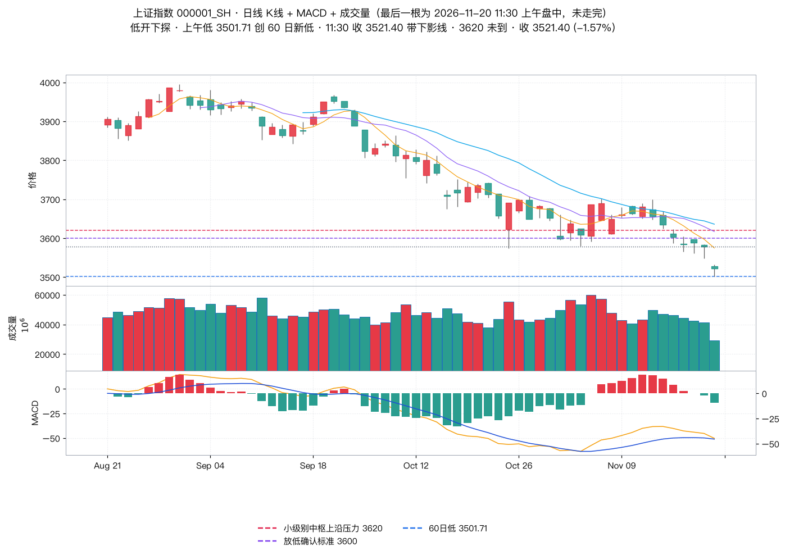
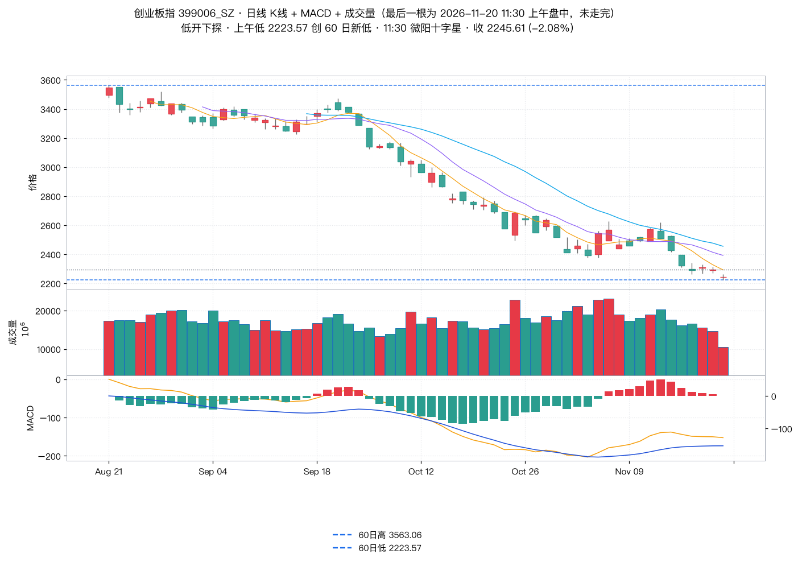
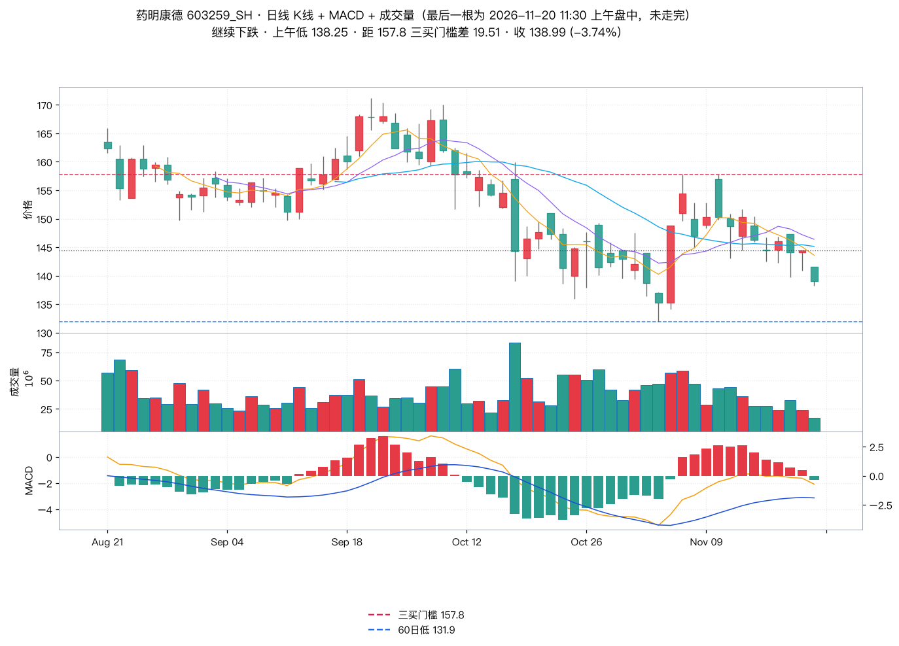
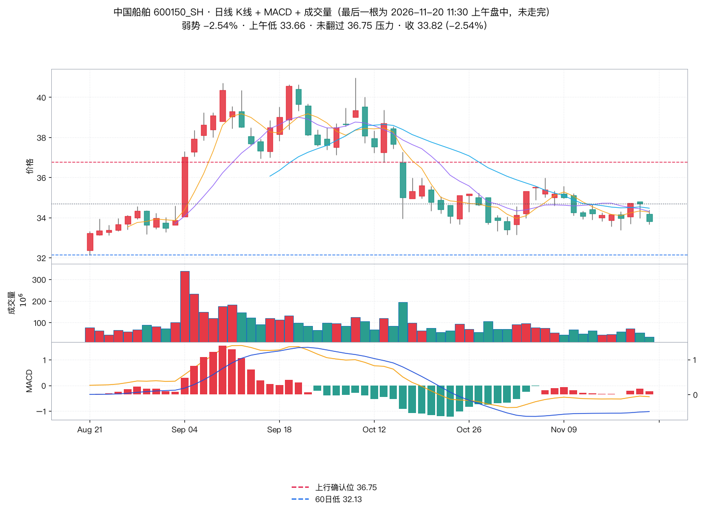
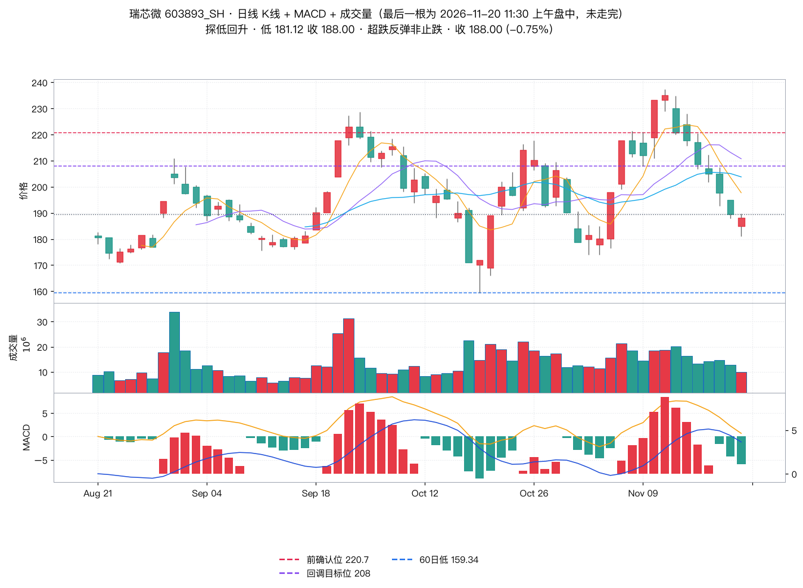
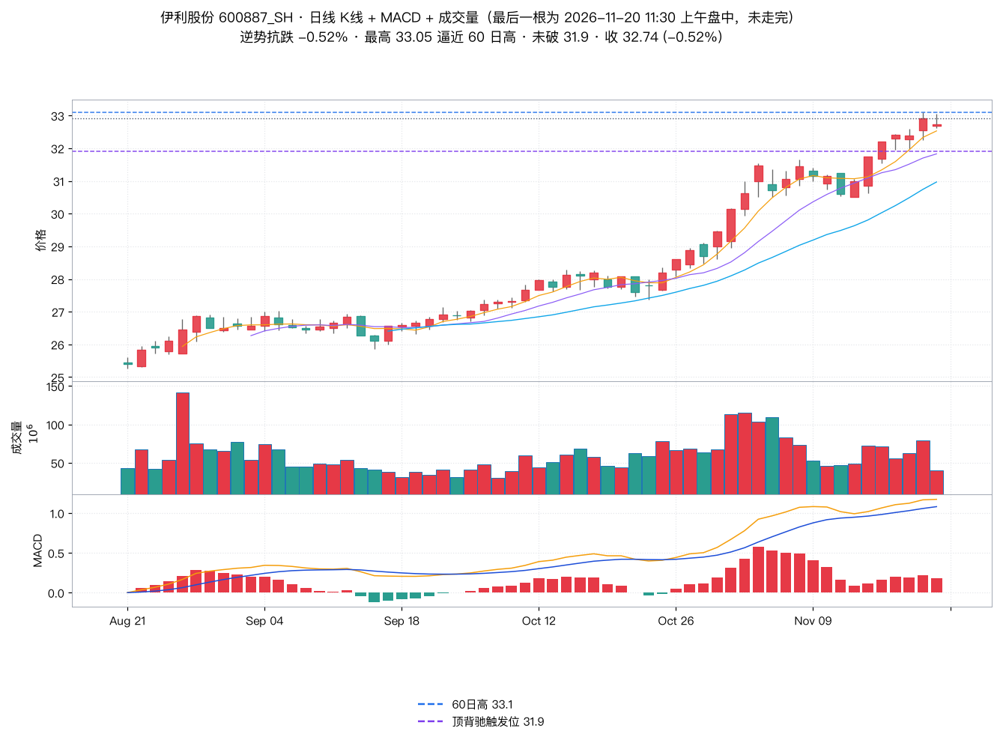
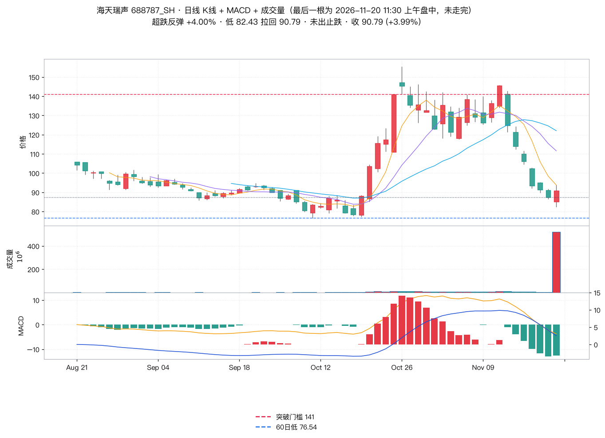
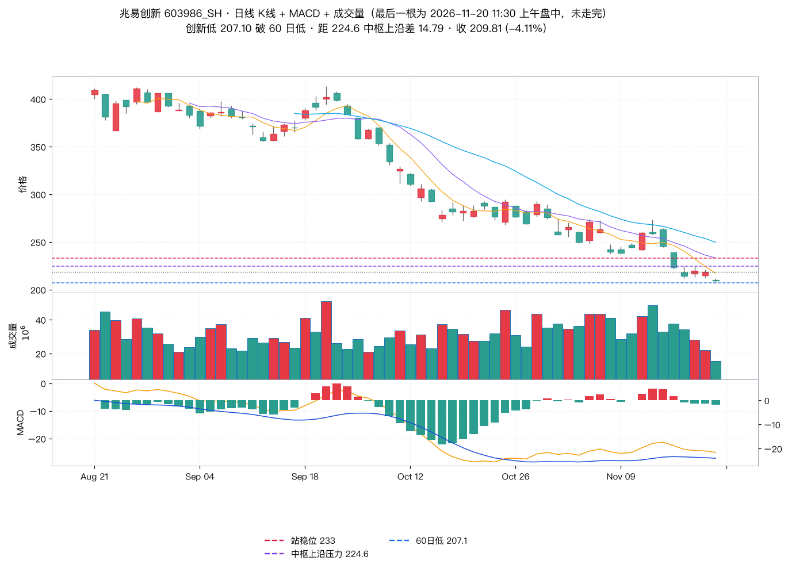
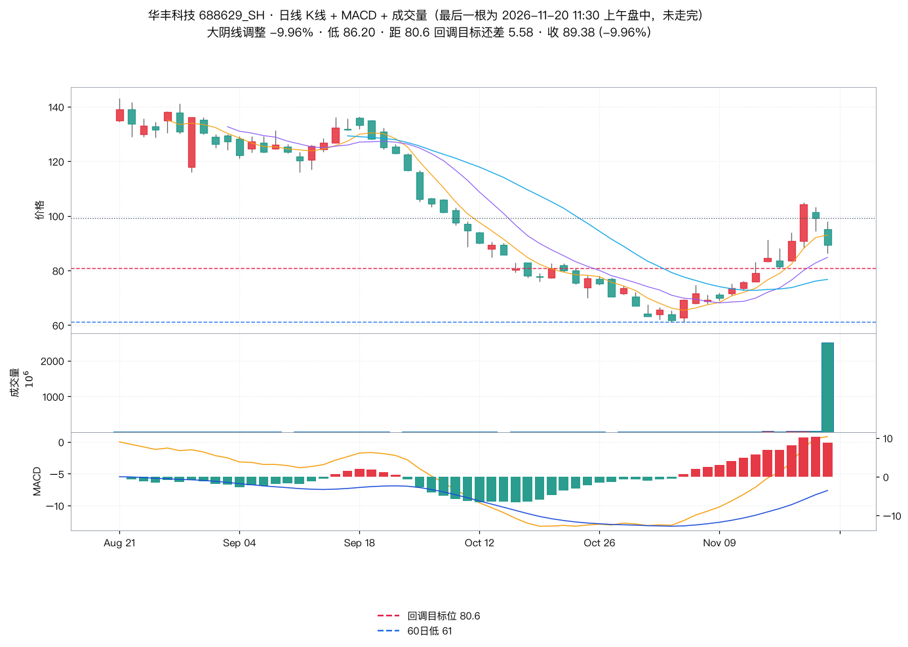
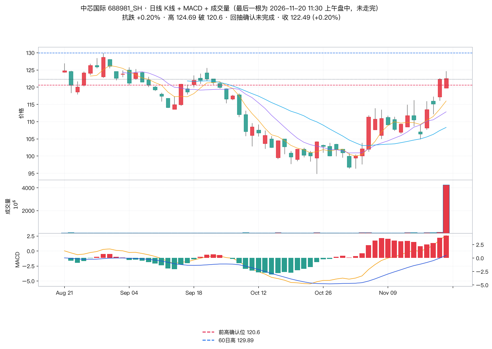

结论：指数进入潜在背驰段，但没见底；仓位要轻、不着急、不追涨。 上午上证低开 3527.30 探 3501.71（创 60 日新低）后回升，11:30 收 3521.40 （-1.57%）带下影线；3620 / 3600 均未到（差 87.92 / 67.92 点）。 两市 11:30 成交 8,558 亿、同比 +8.89% 放量下跌。 7 只标的无买点；国产算力退潮，PCB 与传媒是超跌反弹。
四条判据逐条核：① 「低开下探、中午小波拉升出现下影线」 —— 上证开 3527.30（低开 -1.41%）→ 探 3501.71 → 11:30 收 3521.40，收在开盘价下方 5.90 点 = 阴线带下影 ✓；② 「上午破下去，进入潜在背驰段」 —— 上证破 11/19 低 3547.94、深成破 10505.84、创业板破 2263.74、沪深300 破 3937.75，四大指数同步创 60 日新低 ✓；③ 「3620 / 3600 突破后确认」 —— 上午最高 3532.08，都没摸到；④ 「由宽基 ETF 放量所致」 —— 11:30 两市 8,558 亿 vs 昨同时点 7,859 亿（+8.89%），放量但指数创新低。
纪律照抄：「仓位要轻、不着急、控制出手次数，想尝试轻仓」、「下午快速拉升不追涨」（离背驰段所在小级别中枢太近，空间压缩、易转震荡）、「等突破 3620 或 3600 完成确认」——最后一条是唯一可执行条件。


| 方向（自建篮子 · 上午 11:30） | 老师口径 | 实测（均值 · 涨跌家数 · 个股） |
|---|---|---|
| 国产算力 | 老师：有风险，不一定全起来，只有少数细分能走强 | -3.56%（2 涨 5 跌，11:30 额 141 亿） 海光信息 -7.74%、中科曙光 -7.14%、拓维信息 -7.04%；仅 中芯国际 +0.20%、常山北明 +3.45% 逆势 |
| 半导体 | 老师：风险外溢 | -2.84%（1 涨 5 跌，11:30 额 229 亿） 海光信息 -7.74%、兆易创新 -4.11%、北方华创 -4.02%；中芯国际 +0.20% 逆势 |
| 算力/CPO | 老师：不追涨 | -1.22%（1 涨 4 跌，11:30 额 277 亿） 新易盛 +0.34% 唯一红盘；中际旭创 -2.64%、工业富联 -1.83%、胜宏科技 -1.51% |
| 元件/PCB | 老师：PCB 较好，但走势并没有转强 | -0.16%（3 涨 5 跌，11:30 额 194 亿） 崇达技术 +4.82%、景旺电子 +2.15%、深南电路 +0.22% 红；沪电股份 -0.47%、胜宏科技 -1.51%、东山精密 -2.51% 跌；涨停池元件 6 只（中京电子/东晶电子/超声电子等） |
| AI视频/传媒 | 老师：异动更像超跌反弹，不是止跌 | +0.08%（4 涨 3 跌，11:30 额 55 亿） 中文在线 +2.97%、掌阅科技 +2.58%、华策影视 +0.51% 红；光线传媒 -2.25%、上海电影 -2.43% 跌 |
| 人形机器人 | 老师：异动更像超跌反弹 | -0.79%（1 涨 7 跌，11:30 额 62 亿） 兆威机电 +4.56% 领涨（低 73.65 拉到 80.49）、海天瑞声 +3.99%；鸣志电器 -3.54%、汇川技术 -1.65% 跌 |
| 电力/高股息 | 老师：未点名（防御） | +1.13%（5 涨 0 跌，11:30 额 36 亿） 国投电力 +2.78%、川投能源 +2.04% 等 5 只全线红 —— 上午唯一 |
| 饮料制造 | 老师：未点名（防御） | -2.68%（0 涨 5 跌，11:30 额 6 亿） 东鹏饮料 -4.00%、欢乐家 -3.49%、李子园 -2.24% |
三条要记的：① 「异动是超跌反弹、不是止跌」成立 —— 传媒篮子 +0.08%、机器人 -0.79%，靠兆威机电 兆威机电 +4.56% 等龙头单点拉升；② 「PCB 较好但没转强」精确成立 —— 崇达 崇达技术 +4.82%、景旺 景旺电子 +2.15% 红，沪电 沪电股份 -0.47%、胜宏 胜宏科技 -1.51% 跌；③ 「国产算力有风险」成立 —— 篮子 -3.56%，海光 海光信息 -7.74%、曙光 中科曙光 -7.14% 重挫，仅中芯与常山北明逆势；上午唯一全线红盘是电力/高股息 +1.13%（5/0）。
| 标的 / 题材 | 11:30 收盘 | 老师定性（老师口径） | 关键位 | 实测印证（日线触达） | 动作 |
|---|---|---|---|---|---|
| 药明康德 | 138.99 -3.74% | 不操作 · 上方压力高点无法突破，不满足买入 | 157.8 | 低 138.25，高 141.51，距 157.8 差 16.29 元；60 日低 131.90 未破 | 等 |
| 中国船舶 | 33.82 -2.54% | 不操作 · 下跌中枢没翻过上方压力位 | 36.75 | 低 33.66，距 36.75 差 2.37 元 | 等 |
| 瑞芯微 | 188.00 -0.75% | 激进 · 等日线有力度底分型 + 接阳线后 2-3 天震荡 | 220.7 | 低 181.12 → 收 188.00（自低 +3.8%），异动成立、底分型未出；距 220.7 差 32.70 | 等 |
| 伊利股份 | 32.74 -0.52% | 不操作 · 走势强但不追涨；持仓看顶背驰 | 31.9 | 最高 33.05 逼近 60 日高 33.10，最低 32.61 距 31.9 差 0.71 元 → 「当下没跌破」成立 | 不追 |
| 海天瑞声 | 90.79 +3.99% | 池内中线（11/19 转入）· 本次未提及 | 141 | 低 82.43 → 收 90.79（自低 +10.1%），超跌反弹、离 141 还差 47.02 元 | 等 |
| 兆易创新 | 209.81 -4.11% | 无方法买点 · 底背驰可能成立，等破 224.6 出回抽三买 | 224.6 / 233 | 低 207.10 破 60 日低 212.00，距 224.6 差 12.32 元、距 233 差 20.72 元 | 等 |
| 华丰科技 | 89.38 -9.96% | 无方法买点 · 大阴线未止跌，等回调到 80.6 附近出止跌信号 | 80.6 | 开 95.00 高 98.01 低 86.20 收 89.38 -9.96%（大阴线）；距 80.6 还差 8.78 | 等 |
| 中芯国际 | 122.49 +0.20% | 谨慎 · 抗跌但昨日没出三买，等日线顶分型回抽 | 120.6 | 高 124.69 已破 120.6，收 122.49 +0.20% 逆势红于上证 1.77pp；缺回抽确认 | 等 |








| 老师原文 | 实测 | 判定 |
|---|---|---|
| 老师：「当前走势仍由宽基 ETF 放量所导致，可靠性不一定很高」 | 11:30 两市 8,558 亿 vs 昨同时点 7,859 亿 = +8.89%，确为放量下跌；但「ETF 申购主导」本机无法拆分 | 方向一致·无法核验 |
| 老师：「临近中午小波拉升，使指数出现下影线」 | 上证 O3527.30 → L3501.71 → C3521.40，收在开盘价下方 5.90 点 = 阴线带下影 ✓；但创业板指 C2245.61 高于开盘 2244.06（微阳十字星） | 口径偏窄 |
| 老师：「小级别下跌中枢上沿压力 3620 点或放低标准 3600 点」 | 上午最高 3532.08，差 87.92 / 67.92 点；3620 ≈ 11/16 上午收盘 3620.00，较此前 3623（11/16 上午高点）微降 3 点 | 门槛微降 |
| 老师：「中线股，均没有出买点」 | 中线只列 4 只（药明/船舶/瑞芯微/伊利），未提 11/19 刚转中线的海天瑞声；短线 3 只（兆易/华丰/中芯） | 池子待确认 |
| 老师：「背驰段 / 小二买 / 顶背驰 / 日线有力度底分型」等缠论定性 | 本机不跑分钟级与 czsc，无法独立复算，按老师口径引用；日线只能核前提：上证、创业板创 60 日新低，兆易创新低 207.10 破 60 日低 212.00 | 无法核验 |
说明：原文「低开下探」「破下去进入潜在背驰段」「PCB 较好但没转强」「传媒与机器人异动是超跌反弹」「国产算力有风险」「伊利当下没跌破 31.9」「兆易底背驰有可能成立」「中线短线均无买点」在 11/20 上午均成立，伊利最低 32.61 距 31.9 差 0.71 元为精确命中。上表 5 条为口径偏窄、门槛变动、池子待确认与无法复算。
来源：都业华《高级班》2026-11-20 午盘（高级班·午盘），执业编号 A0400626100004。仅供参考，不作为买卖依据，据此操作风险自担。投资有风险，入市需谨慎！
口径：上午开/高/低/收与 11:30 累计成交额取腾讯 5 日分时点位（同花顺日线 + 新浪 13:15 快照交叉校验，最后一根 K 线未走完、量为上午累计）；板块为自建篮子均值（成分逐一列出）；涨跌家数取新浪全 A 5579 只 13:15 快照；涨停/跌停用东财池。缠论定性按老师口径引用。